中文
中文J. Chadwick and G. Gamow
Editor’s Note
In 1919 Ernest Rutherford had shown that alpha particles fired into nitrogen gas could create hydrogen, apparently because the particles kick a proton out of the nucleus while being themselves captured. Rutherford called the process “artificial disintegration” (popularly, splitting) of the atom. Here James Chadwick and George Gamow suggest that protons might also be produced without the alpha particle entering the nucleus. Gamow went on to propose that protons, with only half the charge of alpha particles, might approach the positively charged nucleus more easily. That idea stimulated work at Cambridge on a high-voltage device to accelerate protons to high energies, leading to the first induced splitting of a lithium nucleus by proton bombardment by John Cockroft and Ernest Walton. 中文
IT is commonly assumed that the process of artificial disintegration of an atomic nucleus by collision of an α-particle is due to the penetration of the α-particle into the nuclear system; the α-particle is captured and a proton is emitted. 中文
On general grounds it seems possible that another process may also occur, the ejection of a proton without the capture of the α-particle. 中文
Consider a nucleus with a potential field of the type shown in Fig. 1, where the potential barrier for the α-particle is given by the full line and that for the proton by the dotted line. Let the stable level on which the proton exists in the nucleus be
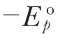
and the level on which the α-particle remains after capture be –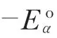
. 中文
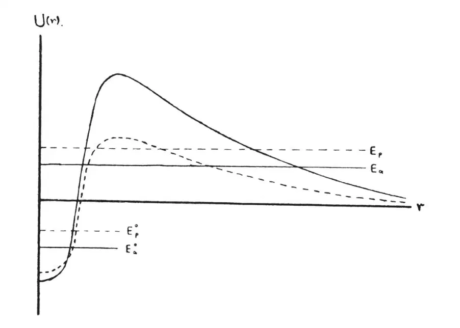
Fig. 1 中文
If an α-particle of kinetic energy Eα penetrates into this nucleus and is captured, the energy of the proton emitted in the disintegration will be
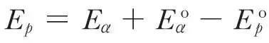
, neglecting the small kinetic energy of the recoiling nucleus. If the nucleus disintegrates without capture of the α-particle, the initial kinetic energy of the α-particle will be distributed between the emitted proton and the escaping α-particle (again neglecting the recoiling nucleus). The disintegration protons may have in this case any energy between Ep = 0 and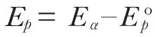
. 中文
Thus, if both these processes occur, the disintegration protons will consist of two groups: a continuous spectrum with a maximum energy less than that of the incident α-particles and a line spectrum with an energy greater or less than that of the original α-particles according as
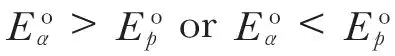
, but in either case considerably greater than the upper limit of the continuous spectrum (see Fig. 2). 中文
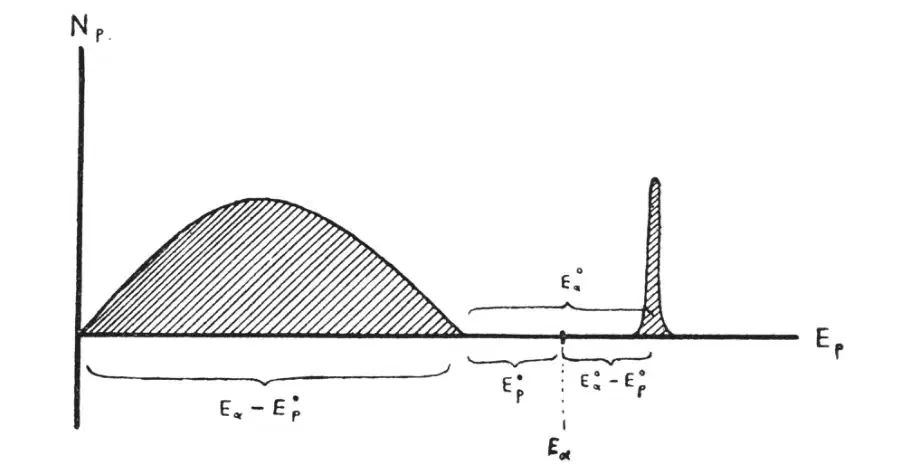
Fig. 2 中文
In some experiments of one of us in collaboration with J. Constable and E. C. Pollard, the presence of these two groups of protons appears quite definitely in certain cases, for example, boron and aluminium. A full discussion of these and other cases of disintegration will be given elsewhere, but it may be noted that the existence of groups of protons has already been reported by Bothe and by Pose. In general the experimental results suggest that with incident α-particles of energy about 5 × 106 volts (α-particles of polonium) the process of non-capture is several times more frequent than the process of capture. 中文
It is clear that, if our hypothesis is correct, accurate measurement of the upper limit of the continuous spectrum and of the line will allow us to estimate the values of the energy levels of the proton and α-particle in the nucleus. In the case of aluminium bombarded by the α-particles of polonium the protons in the continuous spectrum have a maximum range of 32 cm and those of the line spectrum a range of 64 cm. These measurements give the following approximate values for the energy levels:
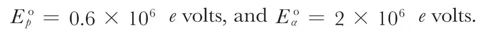
On the wave mechanics the probability of disintegration of both types is given by the square of the integral
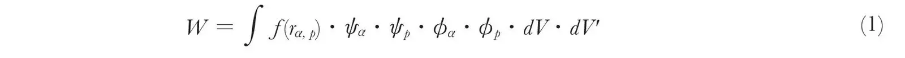
where f(rα, p) is the potential energy of an α-particle and a proton at the distance rα, p apart, and the wave functions ψα, ψp represent the solutions for the α-particle and proton before and ϕα, ϕp after the disintegration. In calculating the integral (1) we must develop the incident plane wave of the α-particle into spherical harmonics corresponding to different azimuthal quantum numbers of the α-particle, and deal with each term separately. 中文
In the case of capture of the α-particle the estimation of (1) can be carried out quite simply. It can be shown that the effect of the higher harmonics is very small, and that the disintegration is due almost entirely to the direct collisions. Thus we obtain for the probability of disintegration
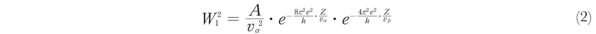
where vα and vp are the velocities of the initial α-particle and the ejected proton respectively. Since only the first harmonic is important in disintegration of this type, it is to be expected that the protons will be distributed nearly uniformly in all directions. 中文
When the α-particle is not captured the disintegrations will arise mainly from collisions in which the α-particle does not penetrate into the nucleus. For disintegration produced in this way the higher harmonics become of importance. The probability of disintegration can be roughly represented by the formula
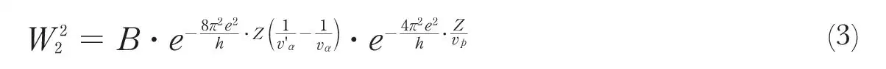
where v'α is the velocity of the α-particle after the collision, and B is a function of the angle of ejection of the proton. The protons of the continuous spectrum will not be emitted uniformly in all directions. According to the expression (3) the distribution with energy of the protons in the continuous spectrum will have a maximum value for an energy of ejection of about 0.3 of the upper limit, and will vanish for zero energy and at the upper limit. 中文
More detailed accounts of the experimental results and of the theoretical calculations will be given shortly. 中文
(126, 54-55; 1930)
J. Chadwick, G. Gamow: Cavendish Laboratory, Cambridge, June 18.